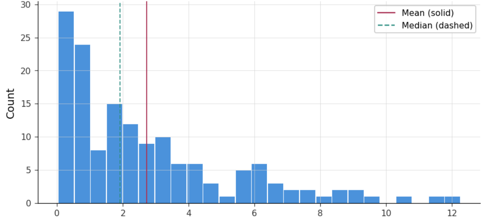
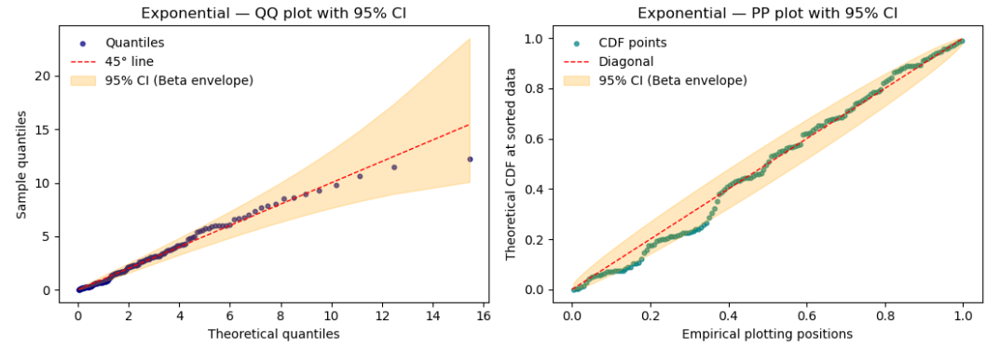
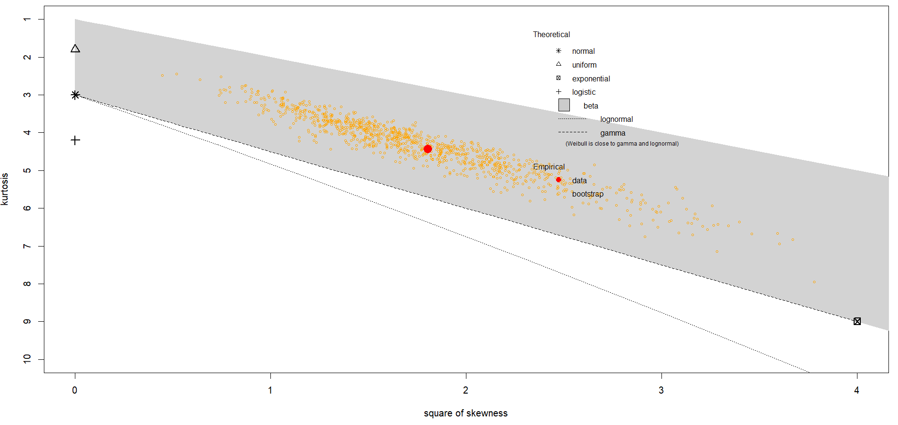
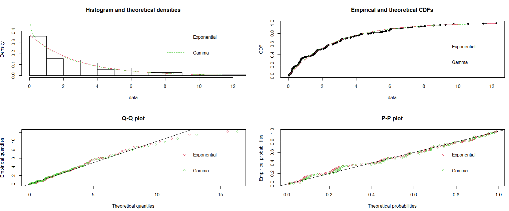
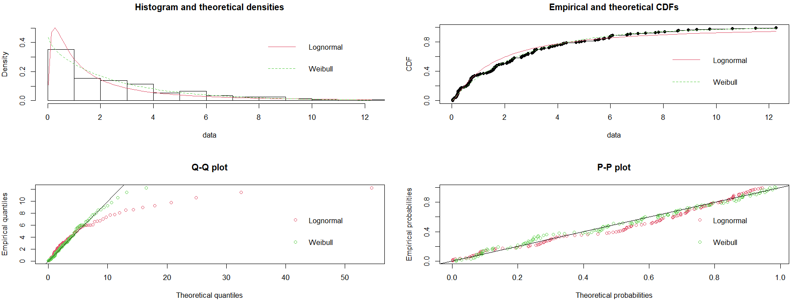
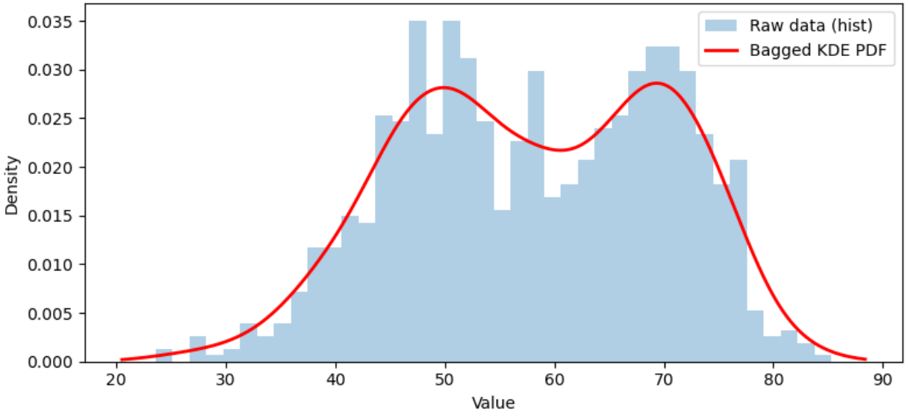
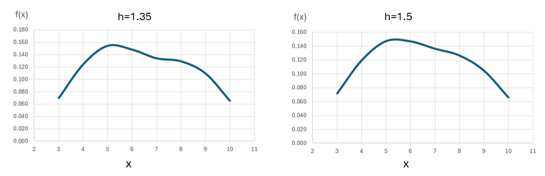

6 Estimating probability distributions from data
Probability theory is nothing but common sense reduced to calculation.
— Pierre Simon Laplace
In simulation modeling data is typically fitted to an appropriate probability distribution. This practice offers several key advantages:
Accurate capture of variability. Real-world processes are stochastic and variable. When fitting a distribution to data, we can model this variability mathematically rather than using a single average or arbitrary values.
Random Sampling. A fitted distribution provides a formal mechanism to sample realistic values during Monte Carlo or Discrete Event Simulation runs.
Improvement of predictive accuracy. A well-fitted distribution ensures that outputs1 reflect real-world behavior, improving decision-making.
Sensitivity and Risk Analysis. Distributions allow the exploration of uncertainty and assessment of risk. For example, tail probabilities can be estimated for extreme events.
Statistical Validation. Using distributions enables hypothesis testing, goodness-of-fit checks, and confidence interval estimation, making the model scientifically defensible.
Real systems are stochastic: arrivals accumulate unexpectedly, service times fluctuate with task complexity, and resource availability changes with human variation. Using only deterministic values suppresses real system behavior. The simulation then behaves like a clockwork mechanism rather than a real process with common and special causes of variation2.
6.1 Data adequacy
Before fitting any dataset to a probability distribution, it is essential to recognize that the quality and characteristics of these data fundamentally affect the validity of the model. Therefore, distribution fitting is not just a mechanical exercise; it is a process grounded in statistical assumptions and practical considerations. If these assumptions are violated or the data is not adequate for the task, the fitted distribution may misrepresent reality, leading to inaccurate simulations and poor decision making3.
6.1.1 Data integrity
Ensure that the dataset is complete, accurate, and consistent. Missing values can bias parameter estimates, inconsistent units or scales can distort the shape of the distribution4. Data integrity is the foundation of reliable input modeling in simulation studies5.
6.1.2 Outlier detection and handling
Outliers and influential values6 can significantly affect parameter estimation, especially for distributions sensitive to tail behavior, such as the Normal or Gamma distribution. Visualization tools like boxplots or statistical measures such as z-scores help identify this and other anomalies. For instance, if most processing times are between 2 and 20 minutes but one observation is 240 minutes, this extreme value could dramatically skew the fitted distribution. The engineer should carefully evaluate whether to exclude, adjust, or model these observations separately, based on whether they reflect genuine process variability or result from data errors.
6.1.3 Assessment of independence and stationarity
Most distribution fitting techniques assume that observations are independent and identically distributed7. If data exhibits autocorrelation or trends over time, these assumptions fail8, the data is non-stationary. Tools like auto-correlation plots or runs tests can detect such patterns. Ignoring these issues can lead to incorrect conclusions.
6.1.4 Exploration of data shape
Before selecting candidate distributions, the engineer should examine the empirical shape of the data using histograms, empirical cumulative distribution functions (CDFs), box-plots, etc. These visualizations reveal skewness, modality, and tail behavior9.
6.1.5 Verification of support and constraints.
The domain of data must match the domain of the probability distribution. Data that is only positive, such as service times, cannot be modeled with a Normal distribution without introducing a computational bound on the occurrence of impossible negative values. Similarly, bounded data like probabilities should be modeled with Beta or Uniform distributions. This step ensures logical consistency between the data and the simulation model.
6.1.6 Ensure adequate sample size
Small samples can lead to unreliable parameter estimates and poor goodness-of-fit results. While there is no universal rule, a minimum of 30 representative observations is often recommended for basic fitting, with larger samples needed for heavy-tailed distributions10.
6.1.7 Estimate summary statistics
Calculating mean, variance, skewness, and kurtosis provides clues about suitable distributions. For example, if skewness is near zero, a Normal distribution may be appropriate; if skewness exceeds one, Gamma or Lognormal might fit better. Comparing these statistics to theoretical values helps narrow down candidates before formal testing.
6.1.8 Plan goodness of fit estimation
Finally, engineers should prepare to validate the chosen distribution using both graphical and statistical methods. Q–Q and P–P plots offer visual checks, while tests such as Kolmogorov–Smirnov, Anderson–Darling, and Chi-square provide quantitative measures. These evaluations confirm whether the fitted distribution adequately represents the data.
6.2 Parametric fitting: Goodness of Fit estimation
Parametric fitting means estimating the parameters of a chosen probability distribution so that it best represent the observed data. The engineer selects a specific family of distributions11 and uses statistical methods to find parameter12 values that make the distribution fit the data as closely as possible.
The key steps of a parametric approach to obtain a probability distribution from real sample data are:
Assumption of the parametric form of a probability distribution that will fit these data.
Estimation of the parameters of the distribution from the sample data.
Validation of the distribution fit using goodness of fit13 and visual tests14.
6.2.1 Distributions frequently used in simulation
Stochastic events such as machine breakdowns, job arrivals, processing times, and quality inspections occur at irregular intervals and under uncertain conditions. To model these phenomena accurately, simulation practitioners rely on both discrete and continuous probability distributions, as well as families of distributions that share common properties.
Discrete distributions describe random variables used to model counts of outcomes. For example, the Bernoulli distribution models success or failure in a single trial, such as whether a part passes inspection or a budget is approved. The Binomial distribution extends this to multiple trials, making it useful for estimating yield rates in batch production or number of defaults in portfolio investment. The Poisson distribution is widely used to model the number of arrivals or failures within a given time interval, which is critical for queuing systems and reliability analysis, or to model the frequency of operational losses –fraud, system outages, per period.
Continuous Distributions are essential for modeling time-related variables such as processing times, interarrival times, and machine lifetimes. The Exponential distribution is commonly used to represent the time between arrivals or failures, making it a cornerstone in reliability and queuing theory. The Normal distribution is often applied to processing times and quality measurements when variability is symmetric and well-behaved. For real-world processes that exhibit skewness, the Lognormal distribution is more appropriate for modeling cycle times. The Gamma distribution is useful for service times with variability, while the Weibull distribution is a standard choice for modeling machine lifetimes and failure probabilities. The Uniform distribution is employed when all values within a range are equally likely, such as randomized setup times or inspection intervals.
Table 6.1 presents some of the probability distributions used in simulation, their type, and examples of the process they can model, as well as the simulation measurement they can support.
| Distribution | Type | Process | Measurement example |
|---|---|---|---|
| Bernoulli | Discrete | Success/Failure of an operation or inspection | Probability of success |
| Binomial | Discrete | Number of successes in a batch | Yield rate |
| Poisson | Discrete | Number of arrivals or failures in a time interval | Arrival rate, failure rate |
| Geometric | Discrete | Number of trials until first success | Mean trials to success |
| Negative Binomial | Discrete | Failures before a set number of successes | Reliability measure |
| Exponential | Continuous | Time between arrivals or failures | Mean Time Between Failures (MTBF) |
| Normal | Continuous | Processing times, quality measurements | Mean and variance of cycle time |
| Lognormal | Continuous | Processing times with skew | Cycle time distribution |
| Gamma | Continuous | Service times with variability | Throughput time |
| Weibull | Continuous | Machine lifetime or component reliability | Reliability, failure probability |
| Uniform | Continuous | Randomized setup times or inspection intervals | Range of possible times |
| Triangular | Continuous | Processing times: best, most likely (mode), and worst case | Probability of finishing a project |
Example: Fitting a probability distribution to data
Table 6.2 presents 150 values of inter-arrival times for a manufacturing process in minutes. We will model these data using a probability distribution following the three-step approach outlined before.
| \(x_i\) | ||||
|---|---|---|---|---|
| 4.82 | 0.16 | 7.32 | 0.18 | 2.87 |
| 0.79 | 5.94 | 4.70 | 8.06 | 2.33 |
| 5.98 | 6.08 | 6.61 | 2.62 | 2.10 |
| 4.25 | 2.68 | 0.32 | 3.72 | 0.23 |
| 0.45 | 2.18 | 0.66 | 0.74 | 4.89 |
| 9.26 | 2.07 | 0.28 | 1.20 | 1.68 |
| 1.78 | 3.09 | 0.94 | 0.14 | 1.01 |
| 0.23 | 5.77 | 2.26 | 0.03 | 0.61 |
| 0.32 | 2.63 | 10.61 | 0.60 | 0.02 |
| 8.95 | 4.11 | 3.03 | 5.98 | 3.06 |
| 2.21 | 1.40 | 3.67 | 0.25 | 0.17 |
| 7.81 | 2.32 | 0.55 | 5.02 | 0.77 |
| 2.88 | 1.65 | 1.94 | 1.48 | 1.61 |
| 6.65 | 2.36 | 4.33 | 2.79 | 3.07 |
| 3.20 | 1.69 | 6.76 | 0.32 | 9.75 |
| 0.23 | 0.03 | 0.22 | 3.10 | 8.54 |
| 0.66 | 1.54 | 5.57 | 6.03 | 0.20 |
| 2.28 | 0.10 | 0.62 | 3.41 | 0.86 |
| 2.63 | 0.19 | 0.05 | 1.61 | 0.24 |
| 1.50 | 0.83 | 0.72 | 0.48 | 0.27 |
| 5.97 | 4.17 | 0.56 | 11.49 | 0.76 |
| 2.87 | 1.34 | 1.56 | 1.87 | 3.13 |
| 0.69 | 1.31 | 1.07 | 3.81 | 0.37 |
| 0.06 | 0.68 | 5.52 | 1.59 | 0.22 |
| 1.61 | 0.18 | 2.28 | 7.05 | 0.73 |
| 0.63 | 2.10 | 5.42 | 0.66 | 3.98 |
| 2.20 | 3.39 | 7.70 | 3.48 | 1.44 |
| 0.54 | 2.74 | 0.71 | 3.89 | 4.20 |
| 5.73 | 1.56 | 12.26 | 3.69 | 8.58 |
| 0.23 | 3.13 | 0.64 | 1.70 | 0.71 |
Candidate probability distribution. These are inter-arrival times from a manufacturing process. Using Table 6.1 as our guide, a good candidate could be the exponential distribution15.
Parameter estimation. Figure 6.1 and Table 6.3 presents the histogram and statistics of these data. The exponential distribution has the form: \[ f(x, \lambda, \theta) = \lambda e^{-\lambda (x-\theta)}, \quad x \geq 0\]
$$
where \(\lambda = \frac{1}{\mu-\theta}\), and \(\theta\) is the location parameter16.
| \(\hat{\mu}\) | \(\hat{\sigma}\) | min | \(Q_1\) | \(\tilde{x}\) | \(Q_3\) | max |
|---|---|---|---|---|---|---|
| 2.727 | 2.670 | 0.023 | 0.660 | 1.910 | 3.870 | 12.260 |

- Goodness of Fit and Visual tests. Applying the Kolmogorov-Smirnov GOF, the \(p\)-value is 0.21, failing to reject the null hypothesis17 at an \(\alpha=0.05\)18. The corresponding visual tests: \(Q-Q\), and \(P-P\) plots, are presented in Figure 6.2.

From the analysis performed, we can model the inter-arrival process with an exponential probability with \(\hat{\lambda} \simeq 0.37\), and \(\hat{\theta}=0.023\).
6.3 Statistical libraries to estimate probability distributions from data
The R Foundation (2025) package fitdistrplus from Muller M.L. and Dutang C. (2015) provides functions to fit univariate distributions for different types of data19 and allowing different estimation methods (maximum likelihood, moment matching, quantile matching and maximum goodness-of-fit estimation). This package also provides various functions to compare the fit of several distributions to the same data set and can handle bootstrap parameter estimates.
The workflow is the following:
Load the data
Generate and interpret the Cullen & Frey graph to obtain candidate distributions.
Fit candidate distributions to data and obtain estimated parameters.
Obtain GOF test statistics, Q-Q, and P-P plots.
Select the distribution that provides the best visual and statistical fit.
After loading the data from Table 6.2 The Cullen & Frey graph is presented in Figure 6.3. This graph is a diagnostic tool that helps choose candidate distributions for our data based on skewness and kurtosis.

The \(x\)-axis is squared skewness. The \(y\)-axis is kurtosis. The sample data is represented by the bigger red dot20. The graph shows theoretical positions and reference points for common distributions:
Normal: Skewness =0, kurtosis=3 (near the bottom left).
Uniform: Skewness \(\simeq\) 0, kurtosis \(\simeq\) 1.8.
Exponential: Skewness \(\simeq\) 2, kurtosis \(\simeq\) 9.
Lognormal: Higher skewness and kurtosis (upper right).
Gamma: Between normal and exponential.
Weibull: Close to Gamma and Lognormal.
Beta: Within gray region, if data are proportions, probabilities or rates defined on the interval \([0,1]\)21.
The interpretation is:
If the red point is near Normal, consider fitting a normal distribution.
If the point is far to the right, high skewness, consider Lognormal or Gamma.
If the red point is very high on kurtosis, heavy-tailed distributions like Lognormal or Weibull might fit better.
The bootstrapped confidence region (yellow dots) shows variability in skewness and kurtosis estimates. If this ellipse of yellow dots overlaps multiple distribution zones, the engineer may need to compare different candidates.
For our data, we considered four candidates to fit22: Exponential, Gamma, Weibull, and Lognormal. Table 6.4 presents the results of each fit.
| Distribution | Rate | Shape | Scale | Mean log | SD Log | Loglikelihood | AIC | BIC |
|---|---|---|---|---|---|---|---|---|
| Exponential | 0.366615 | NA | NA | NA | NA | -300.5165 | 603.0330 | 606.0437 |
| Gamma | 0.336937 | 0.91915 | NA | NA | NA | -300.1593 | 604.3186 | 610.3398 |
| Weibull | NA | 0.95586 | 2.6750 | NA | NA | -300.2728 | 604.5457 | 610.5669 |
| Lognormal | NA | NA | NA | 1.0000 | -7.02E-11 | -311.8372 | 627.6744 | 633.6957 |
The selection criteria is designed to penalize complexity:
Log-likelihood (loglik): Measures how well the model explains the data: higher is better23.
Akaike Information Criterion (AIC): \(AIC=2k-2\cdot \textnormal{loglik}\), where \(k\) is the number of parameters. A lower AIC indicates a better trade-off between fit and parsimony24.
Bayesian Information Criterion (BIC): \(BIC=log(n) \cdot k -2 \cdot\textnormal{loglik}\), where \(n\) is the sample size. Lower BIC prefers simpler models more strongly than AIC because it has a heavier penalty on \(k\).
The key is to compare AIC and BIC across all the fitted distributions and select the one with the smallest values. The absolute difference in the AIC or BIC values between two competing models is a good measurement. For example, if model A has AIC of 200, and model B has AIC of 202, the absolute difference is \(|200-202|=2\). if the absolute difference is less than 2, the models are essentially equivalent. If it is between 2 and 4, there is evidence favoring the lower AIC. If it is between 4 and 7, there is strong evidence favoring the model with lowest AIC. Of course, the criteria also applies for BIC.
From the values in Table 6.4, the absolute differences in AIC among the Exponential, Weibull, and Gamma distributions are less than 2. The BIC differences between the Exponential, Gamma and Weibull distributions are 4, favoring the lower BIC of the Exponential. The lognormal distribution has larger AIC and BIC by more than an absolute difference of 20 and we can eliminate it from the analysis. A solid candidate is emerging.
The next step is to evaluate the goodness-of-fit test statistics presented in Table Table 6.5. They measure the distance between the empirical and fitted CDF.
| Statistic | Exponential | Gamma | Lognormal | Weibull |
|---|---|---|---|---|
| Kolmogorov–Smirnov | 0.08105931 | 0.06239441 | 0.1059878 | 0.06478679 |
| Cramér–von Mises | 0.12147605 | 0.07654783 | 0.3670428 | 0.08499319 |
| Anderson–Darling | 0.82000833 | 0.491181 | 2.1970168 | 0.54486401 |
The description of each one of these test statistics is:
Kolmogorov-Smirnov (KS): The test statistic is \(D=\textnormal{sup}_x|\hat{F}(x)-F(x, \tau)|\) which is the maximum vertical gap between the empirical \((\hat{F}(x))\) and fitted \((F(x, \tau))\) CDF. Smaller is better25.
Cramer-von Mises (CvM): The test statistic is the integrated squared distance \(\int[\hat{F}(x)-F(x, \tau)]^2 \, dF(x)\). Smaller is better. This statistic is sensitive to differences across the entire distribution.
Anderson-Darling (AD) The test statistics is a tail-weighted squared distance \(\int \frac{[\hat{F}-F]^2}{F(1-F)} dF\). Smaller is better. This statistic places more emphasis on the tails. Therefore, it is useful when tail fit matters.
To use these test statistics we compare KS, CvM, and AD across models and select the one with consistently smaller values. At the same time, verifying the Q-Q and P-P plots to confirm the selection.
According to the test statistics the Gamma distribution is the best candidate26, but not by much. Figure 6.4 and Figure 6.5 present a visual confirmation that includes P-P and Q-Q plots.


To conclude our exercise, we might decide to proceed fitting the Exponential distribution to our data27. Listing 6.1 provides the R script for this example.
#| label: lst-rscript
#| caption: R script for fitting a probability distribution to data.
# Read data file
library(readxl)
Inter_Times_Fit <- read_excel("Inter_Times_Fit.xlsx")
View(Inter_Times_Fit)
# Create data frame
data <- Inter_Times_Fit$Inter_T
head(data, 10)
library(fitdistrplus)
# Generate Cullen and Frey chart with bootstrap
descdist(data, boot = 1000)
# Fit distributions
fit_exp <- fitdist(data, "exp")
fit_gamma <- fitdist(data, "gamma")
fit_lnorm <- fitdist(data, "lnorm")
fit_weib <- fitdist(data, "weibull")
summary(fit_exp)
summary(fit_gamma)
summary(fit_lnorm)
summary(fit_weib)
# Goodness-of-fit tests
gof <- gofstat(list(fit_exp, fit_gamma, fit_lnorm, fit_weib))
gof
# Plots
par(mfrow = c(2,2))
denscomp(list(fit_exp, fit_gamma),
legendtext = c("Exponential", "Gamma"))
cdfcomp(list(fit_exp, fit_gamma),
legendtext = c("Exponential", "Gamma"))
qqcomp(list(fit_exp, fit_gamma),
legendtext = c("Exponential", "Gamma"))
ppcomp(list(fit_exp, fit_gamma),
legendtext = c("Exponential", "Gamma"))
par(mfrow = c(2,2))
denscomp(list(fit_lnorm, fit_weib),
legendtext = c("Lognormal", "Weibull"))
cdfcomp(list(fit_lnorm, fit_weib),
legendtext = c("Lognormal", "Weibull"))
qqcomp(list(fit_lnorm, fit_weib),
legendtext = c("Lognormal", "Weibull"))
ppcomp(list(fit_lnorm, fit_weib),
legendtext = c("Lognormal", "Weibull"))6.4 Kernel Density Estimation: non-parametric fitting
The concept was introduced by Rosenblatt (1956), and Parzen (1962). Kernel Density Estimation (KDE) is a non-parametric method to estimate the PDF of a random variable based on observed data. Unlike parametric methods that assume a specific distribution, KDE makes no such assumption and instead smooths the data using a kernel function, see Figure 6.6.

A kernel function is simply a smooth, bell shaped curve used in KDE to "spread out" each data point and create a continuous estimate of the underlying distribution.
The procedure is as follows:
Collect a representative sample (\(n\)) of data: \(x_1, x_2, x_3, \ldots, x_n\).
Place a kernel function28.
Sum these kernels to create a smooth estimate of the PDF: \[ \hat{f}(x)=\frac{1}{n \cdot h} \sum_{i=1}^{n}K \left(\frac{x-x_i}{h}\right) \tag{6.1}\]
where:
\(K(\cdot)\) is the kernel function.
\(h\) is the bandwidth that controls smoothness29.
\(x\) represents the location where the engineer want to estimate the probability density30.
The Gaussian kernel \(K(u)\) is:
\[ K(u)=\frac{1}{\sqrt{2 \cdot \pi}} e^\frac{-u^2}{2} \]
The Gaussian kernel is a smooth, bell-shaped function used in Kernel Density Estimation (KDE) to evaluate a probability density without assuming a specific distribution. It works by placing a Gaussian curve at each data point and summing these curves to create a continuous estimate, with the bandwidth controlling the width of each curve. This kernel is ideal when you need a smooth estimate for continuous data Wand (1995), especially when the underlying distribution is unknown or multimodal, and when tails matter because it has infinite support. It is widely used due to its mathematical convenience and compatibility with automatic bandwidth selection methods, though it may not be suitable for bounded data without adjustments. In summary, use a Gaussian kernel when:
A smooth and continuous estimate is desired. This is ideal for data without sharp boundaries.
The underlying distribution is unknown or multimodal. This is, it works well for data with multiple peaks.
Mathematical convenience is a priority. These kernels are differentiable and easy to integrate.
They work well with automatic bandwidth selection methods like Scott (1992), and Silverman (1998).
Tails matter. Gaussian kernels have infinite support, they handle tails better than bounded kernels like Epaneshnikov (1969).
Scott’s rule has the formula:
\[ h=\sigma \cdot n^{-\frac{1}{5}} \]
Where:
\(\sigma=\) sample standard deviation
\(n=\) sample size
Silverman’s rule of thumb has the formula31:
\[ h=0.9 \cdot \textnormal{min} \left( \sigma, \; \frac{IQR}{1.34}\right) \cdot n^{-\frac{1}{5}} \]
Example: Generation of a distribution using KDE
The following are service times, in minutes: \([4, 5, 6, 8, 9]\). We will estimate a non-parametric PDF for these data.
Choose a Kernel. In this case, the Gaussian kernel.
Select the bandwidth \(h=1.5\).
Compute KDE at point \(x=7\). Applying Equation 6.1: \(\hat{f}(7)\simeq 0.13612\). Therefore, the estimated density is \(\hat{f}(7)=0.136\).
Repeat for other query points \(x\) from 3 to 10 and plot the KDE.
Table 6.6 shows the results of the pairs \((x, \hat{f}(x))\) for different values of \(h\) corresponding to Scott’s formula (\(h=1.5\)) and Silverman’s (\(h=1.35\)).
| \(x_i\) | \(h=1.35\) \(\hat{f}(x)\) | \(h=1.5\) \(\hat{f}(x)\) |
|---|---|---|
| 3 | 0.070 | 0.072 |
| 4 | 0.125 | 0.119 |
| 5 | 0.155 | 0.147 |
| 6 | 0.148 | 0.147 |
| 7 | 0.134 | 0.136 |
| 8 | 0.129 | 0.126 |
| 9 | 0.110 | 0.105 |
| 10 | 0.065 | 0.066 |
The corresponding density functions are shown in Figure 6.7.

6.5 Questions
Why is fitting probability distributions to data important in simulation?
What is meant by “accurate capture of variability”?
How does distribution fitting improve predictive accuracy?
What role do probability distributions play in sensitivity and risk analysis?
Why is data adequacy critical before fitting a distribution?
What are the consequences of poor data integrity?
Define outliers and explain their impact on distribution fitting.
What does it mean for data to be independent and identically distributed (iid)?
What is stationarity and why is it important?
How can histograms and empirical CDFs help in selecting distributions?
Why must the support of the data match the distribution?
What sample size is generally considered acceptable for distribution fitting?
What summary statistics are useful for selecting candidate distributions?
What is the purpose of goodness-of-fit (GOF) tests?
Define parametric fitting.
What are the key steps in parametric distribution fitting?
Give examples of discrete distributions used in simulation.
Give examples of continuous distributions used in simulation.
What do AIC and BIC measure?
What is kernel density estimation (KDE)?
6.6 Exercises
Data Interpretation. Given \(\hat{\mu} = 2.727\) and \(\hat{\theta}=0.023\), compute \(\hat{\lambda}\) for an exponential distribution.
Outlier Effect. If one observation is 100 while all others are below 10, explain its effect on mean and variance.
Skewness Analysis. If a dataset has large positive skewness, suggest appropriate distributions.
Support Matching. Can a Normal distribution model service times? Explain.
AIC Comparison. Model A has AIC = 500, Model B has AIC = 503. Which is better?
GOF Interpretation. If KS statistic is smaller for Gamma than Exponential, which fits better?
Probability Calculation. For a Poisson process with \(\lambda=3\), compute \(P(X=0)\).
Bandwidth Calculation. Given \(\sigma=2\), \(n=100\), compute bandwidth using Scott’s rule.
KDE Understanding. Explain the effect of a very small bandwidth.
Gamma Fit Insight. Why might a Gamma distribution be preferred over Exponential?
Notes of the Chapter
- Pierre-Simon Laplace (1749–1827) was a French mathematician, physicist, and astronomer with profound contributions to science. Laplace developed the Bayesian interpretation of probability, formulated the Laplace transform, and made major advances in celestial mechanics, explaining the stability of the solar system and predicting the existence of black holes. Funny fact: Laplace was so politically adaptable that he served under the monarchy, the French Revolution, Napoleon, and the restored monarchy, earning him the nickname the chameleon of science.
References
e.g., waiting times, resource utilization, processing times, etc.↩︎
Other transient effects, congestion, sudden arrivals, or rare and influential delays cannot appear if the model has been stripped of the variability that generates them.↩︎
Systematically validating data quality, independence, shape, and domain, analysts ensure that the fitted distributions are both statistically sound and practically meaningful.↩︎
For example, if service times are recorded in both seconds and minutes without conversion, the resulting distribution will be meaningless.↩︎
And big data analytics.↩︎
Outliers are observations that are far from the bulk of the data, typically judged by distance from the mean or median (e.g., using z-scores or IQR). An influential value is an observation that, if removed, will make the model change in behavior.↩︎
iid.↩︎
If data is non-stationary (mean or variance changes over time), fitting a distribution assuming constant parameters will produce biased estimates. For example, estimating average service times without noticing a learning effect will overestimate future performance.↩︎
For example, a histogram showing strong right skew suggests Exponential, Gamma, or Lognormal distributions rather than Normal.↩︎
A distribution is considered heavy tailed if its tail decays more slowly than an exponential function. For heavy tailed Weibull –with shape parameter <1, lognormal, and light tailed distributions like the Gamma, a minimum sample size of 100 will work reasonably well. For extreme cases, the engineer is referred to Coles (2001), where the minimum sample can be greater than 500.↩︎
e.g., Normal, exponential, Weibull, Poisson, etc.↩︎
Average, dispersion, location, etc.↩︎
GOF↩︎
Kolmogorov-Smirnov, Anderson-Darling, Chi-Square, histogram overlay, Q-Q and P-P plots.↩︎
Other candidates can be the Weibull, and Gamma family of distributions. The young Padawan is encouraged to investigate why.↩︎
From our sample data, the statistic \(\hat{\mu}=\hat{\theta}+\frac{1}{\lambda}\) is the mean in Table 6.3 and the location statistic is the minimum value of the sample: \(\hat{\theta}= 0.023.\)↩︎
\(H_0\) : Data is exponentially distributed.↩︎
There is a caveat in the calculation of p-values for distribution fitting: the parameters are estimated from the data, this makes the test statistic of the GOF smaller, on the average, resulting in p-values that are inflated or too optimistic rejecting \(H_0\) less often than it should. This situation will be covered in the next section when using statistical libraries to generate and compare the performance of different distributions to model data.↩︎
Continuous, censored, non-censored, and discrete.↩︎
With a region of yellow samples if bootstrapping is used.↩︎
If data are unbounded (e.g., positive real numbers), Beta is not considered because its support does not match the data.↩︎
The young Padawan might have selected different ones.↩︎
loglik is a measure of fit.↩︎
Parsimony in the context of statistical modeling refers to the principle of simplicity: a model should explain the data well while using the fewest possible parameters or complexity.↩︎
p-values from classical GOF tests assume fixed parameters; when these parameters are estimated from the same data (as is typical in distribution fitting), those p-values can be optimistic. Use the test statistic as a rough guide and rely on visual diagnostics.↩︎
Followed by the Weibull and Exponential distributions respectively.↩︎
It has a good fit and needs less parameters.↩︎
Usually Gaussian but can be uniform or Epaneshnikov.↩︎
Smaller h for more detail, and larger h for a smoother curve.↩︎
For example, if we have data on service times, and want to know the estimated probability density at 10 minutes, then x = 10. Note that x is not necessarily one of the data points, it is a query point.↩︎
\(IQR \approx 1.349 \times \sigma\) for a normal distribution. Therefore, the formula picks the smaller of the two robust scale estimates: \(\sigma\) or normalized IQR. Remember that IQR is less sensitive to outliers than \(\sigma\).↩︎